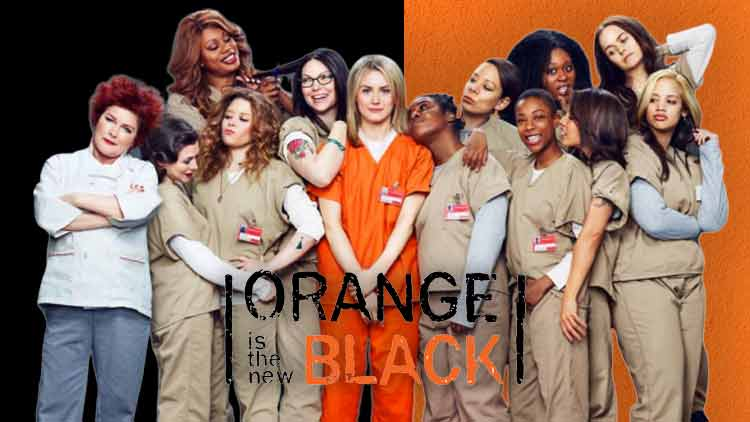

Orange black, é uma série de televisão desenvolvida por Jenji Kohan, Sara Hess e Tara Herrmann para a Netflix, estrelada por Taylor Schilling. É baseada em Orange Is the New Black: My Year in a Women's Prison (2010), memória criada por Piper Kerman, sobre suas experiências na FCI Danbury, uma prisão federal de segurança mínima. A série foi oficializada no primeiro semestre de 2013, com ordem de 13 episódios para a primeira temporada, Em 5 de fevereiro de 2016, a Netflix renovou a série para uma quinta, sexta e sétima temporada. Em 17 de outubro de 2018, foi confirmado que a sétima temporada seria a última da série e foi lançada em 26 de julho de 2019.
